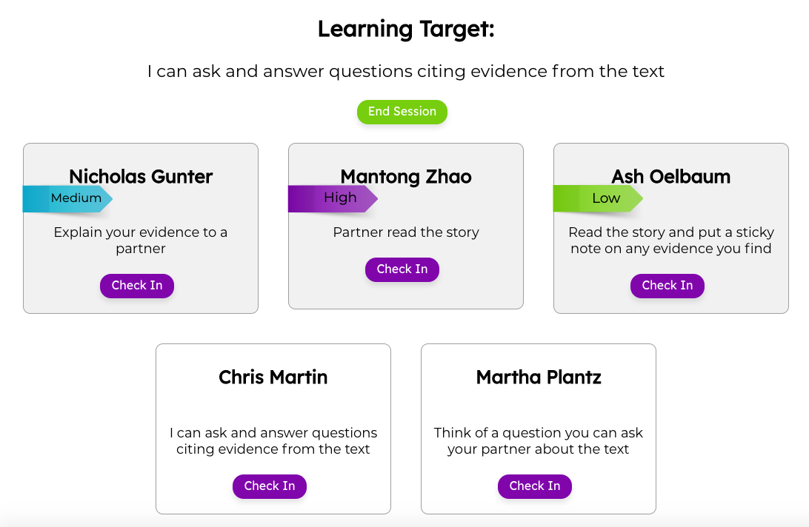
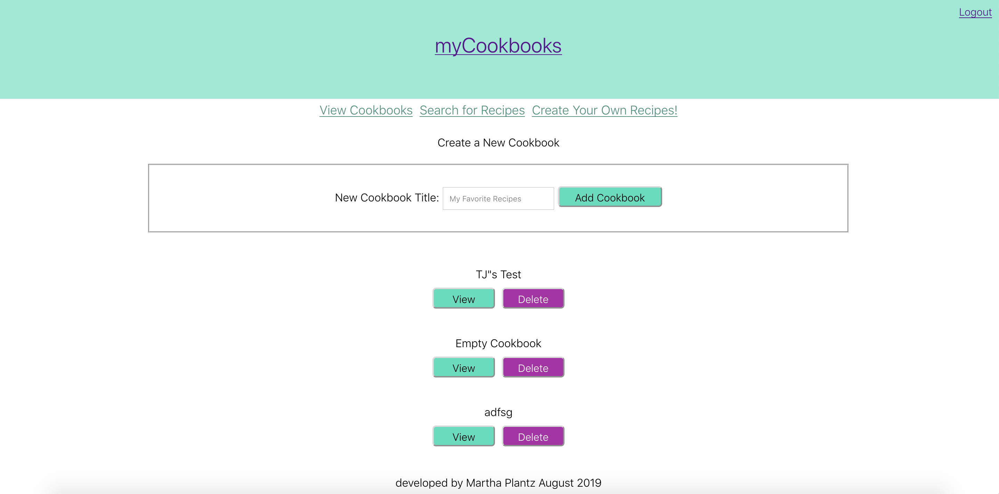
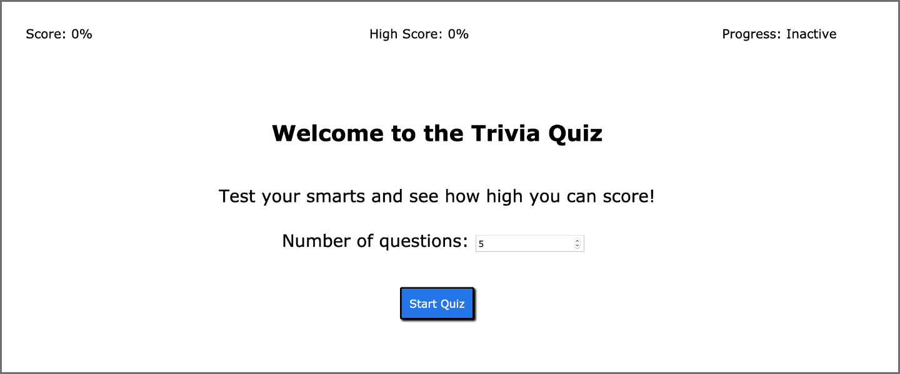

About
Hey there, my name is Martha Plantz! I am a full stack web developer who follows life by the quote “Do one thing that scares you every day” ~Eleanor Roosevelt. I have been going through cycles of proving to myself that I am capable of overcoming any task; receiving my Bachelors in Mathematics, leading a team of mathematics teachers as a new teacher, developing a love of indoor bouldering despite my fear of heights, earning my Masters in Education in my first three years teaching.
I fell instantly in love with programming when seeing assignments come to life. I was amazed that I was able to create simple programs from nothing! I am ready for more challenges that push me to continue growing and doing something that scares me every day. I would love to talk more if you have any questions! Also, check out my resume >>
Projects

Sprout
React, CSS, Node.js, postgreSQL, Express, Knex, Socket.io
Sprout is a formative assessment tool used to help teachers deliver specific, goal-oriented, and timely feedback in the classroom.
myCookbook
CSS, React, Node.js, postgreSQL
This cookbook application allows users to search, create and organize recipes into multiple cookbooks. This will make organization for home cooks expontentially better.
Test Your Trivia!
CSS, HTML5, JavaScript, Open Trivia Database API, jQuery
This application allows users to practice their trivia skills, by keeping track of their high score after completing a series of multiple-choice quiz questions.